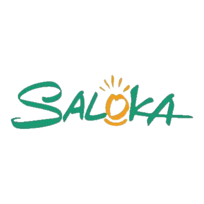
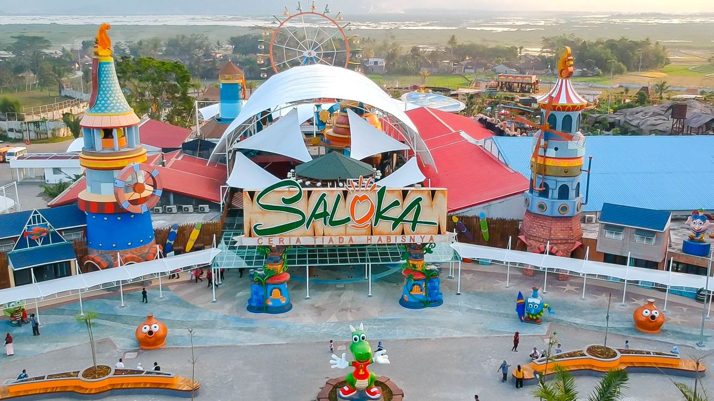

Tentang Saloka

Taman Rekreasi Terbesar di Jawa Tengah
SALOKA adalah tempat wisata yang hadir sebagai salah satu destinasi wisata Pesona Indonesia yang berbentuk taman rekreasi tematik keluarga di Jawa Tengah yang mengusung konsep kearifan lokal. Berlokasi di persimpangan antara kota Semarang, Salatiga, Surakarta dan Daerah Istimewa Yogyakarta.
Berdiri di atas lahan seluas 12 Hektare, memiliki 25 wahana yang dibangun dengan peralatan modern oleh tenaga ahli berpengalaman dan berlisensi internasional.
Nama SALOKA terinspirasi dari legenda Rawa Pening, suatu Kawasan yang dekat dengan wilayah SALOKA Theme Park berada. Diceritakan pada zaman dahulu hiduplah sepasang suami-istri bernama Ki Hajar Salokantara dan Nyi Endang Sawitri. Mereka mempunyai seorang anak bernama Baru Klinthing yang berwujud naga dan bisa berbicara seperti layaknya manusia. Baru Klinthing dikenal suka menolong. Berangkat dari cerita tersebut, SALOKA berharap mampu menyajikan keceriaan tiada habisnya dengan maskot berbentuk naga yang bernama “LOKA”.
Visi dan Misi
Visi
"Menjadi tempat hiburan dan rekreasi seluruh keluarga yang modern dan menyenangkan dengan pelayanan terbaik, serta terkenal di Jawa dan Indonesia."
Misi
- Memberi kegembiraan dan kesan yang tak terlupakan kepada pengunjung SALOKA, melalui system pelayanan terbaik.
- Membangun bran Awareness dan Brand Image sebagai tempat hiburan dan rekreasi seluruh keluarga yang terbaik serta terbesar di Jawa Tengah dan Indonesia.
- Membangun dan terus meningkatkan bisnis perusahaan yang menguntungkan melalui kunjungan berbasis inovasi dan teknologi. Sebagai destinasi wisata baru kebanggaan Jawa Tengah yang terangkai dengan tol Trans Jawa.
Saloka Park memiliki pertunjukkan Show and Event yaitu Baru Klinthing Show merupakan pertunjukan yang mengadaptasi cerita rakyat mengenai Baru Klinthing, dengan memadukan teknologi modern, animasi 3D, laser, musik, dan air mancur menari. Pertunjukan ini mendapatkan penghargaan dari LEPRID (Lembaga Prestasi Indonesia Dunia), sebagai pertunjukan spektakuler di Indonesia yang mengangkat legenda rakyat dengan menggunakan teknologi multimedia dan water fountain.
Karnaval yang menampilkan karakter-karakter yang ada di Negeri SALOKA di area Kamayayi dan karakter yang muncul di cerita rakyat. Pertnjukkan ini dikemas dalam bentuk tarian dan photo moment.
Harga tiket pada hari Senin-Jumat adalah Rp 120.000 dan hari Sabtu-Minggu adalah Rp 150.000 yang berlaku sebagai tiket terusan. Anak-anak dengan tinggi badan di bawah 90 cm belum berlaku harga tiket. Lansia di atas 55 tahun berlaku harga khusus dengan menunjukkan KTP di loket Saloka. Pembelian tiket bisa dilakukan di offline/loket tiket dan online pada website (maksimal H-1 kedatangan) dan merchant yang bekerjasama dengan Saloka. Tidak berlaku refund untuk pembatalan tiket yang sudah dibeli.
Makanan dan minuman dari luar Saloka tidak boleh dibawa masuk ke area Saloka, kecuali minuman dalam tumbler dan makanan khusus bayi.